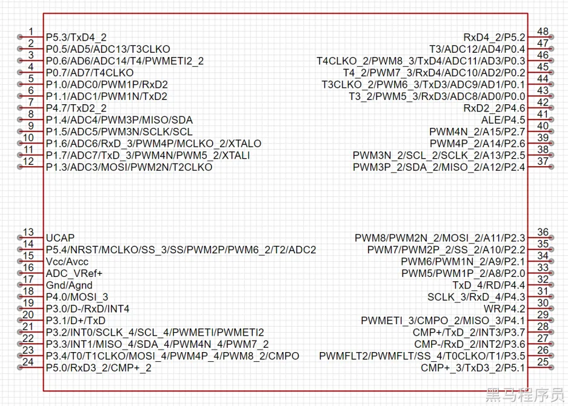
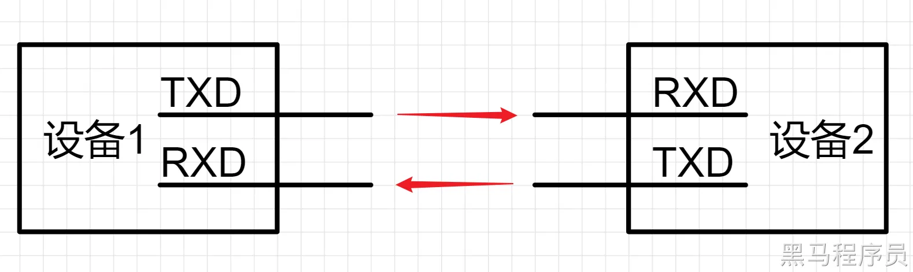
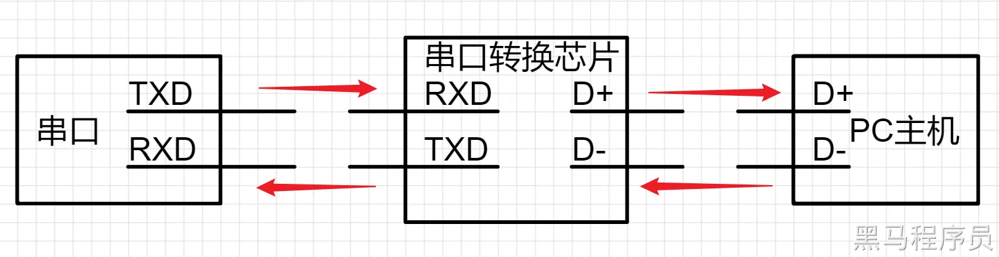
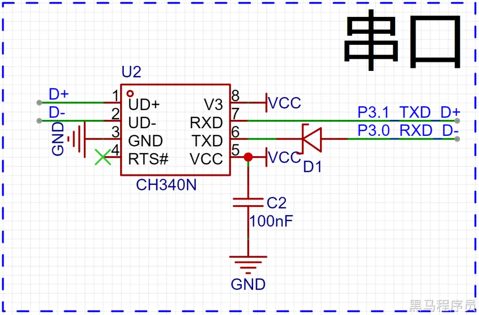
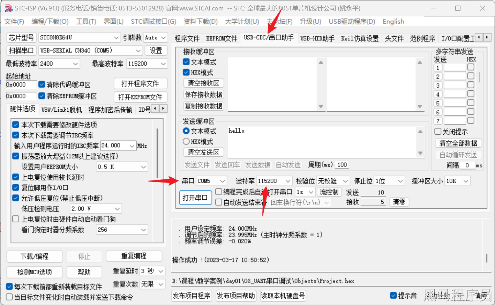

<!DOCTYPE lake>
<h1 data-lake-id="article-title" id="article-title"><span data-lake-id="u9c4b333e" id="u9c4b333e" style="color: var(--yq-text-primary)">串口通讯</span></h1><p data-lake-id="u190a22a3" id="u190a22a3"><strong><span class="lake-fontsize-18" data-lake-id="uc12bd939" id="uc12bd939" style="color: var(--yq-text-primary)">学习目标</span></strong><span class="lake-fontsize-18" data-lake-id="u5bdf7f9a" id="u5bdf7f9a" style="color: var(--yq-text-primary)"><br/></span><span class="lake-fontsize-11" data-lake-id="ubf38e217" id="ubf38e217" style="color: var(--yq-text-primary)">●</span><span class="lake-fontsize-11" data-lake-id="ud3b6d316" id="ud3b6d316" style="color: var(--yq-text-primary)">了解串口通信的基本概念</span><span class="lake-fontsize-11" data-lake-id="u0a88b130" id="u0a88b130" style="color: var(--yq-text-primary)"><br/></span><span class="lake-fontsize-11" data-lake-id="u37298cc3" id="u37298cc3" style="color: var(--yq-text-primary)">●</span><span class="lake-fontsize-11" data-lake-id="u4d219ecc" id="u4d219ecc" style="color: var(--yq-text-primary)">掌握STC8H的串口通信原理</span><span class="lake-fontsize-11" data-lake-id="u653c7629" id="u653c7629" style="color: var(--yq-text-primary)"><br/></span><span class="lake-fontsize-11" data-lake-id="uf7b8cd56" id="uf7b8cd56" style="color: var(--yq-text-primary)">●</span><span class="lake-fontsize-11" data-lake-id="u87740294" id="u87740294" style="color: var(--yq-text-primary)">掌握STC8H的串口通信编程</span><span class="lake-fontsize-11" data-lake-id="u2d1eb9e6" id="u2d1eb9e6" style="color: var(--yq-text-primary)"><br/></span><span class="lake-fontsize-11" data-lake-id="u183a9be4" id="u183a9be4" style="color: var(--yq-text-primary)">●</span><span class="lake-fontsize-11" data-lake-id="ub7c6ba96" id="ub7c6ba96" style="color: var(--yq-text-primary)">学会使用逻辑分析仪调试串口</span><span class="lake-fontsize-11" data-lake-id="ua21e9c86" id="ua21e9c86" style="color: var(--yq-text-primary)"><br/></span><strong><span class="lake-fontsize-18" data-lake-id="ue29a9b70" id="ue29a9b70" style="color: var(--yq-text-primary)">学习内容</span></strong><span class="lake-fontsize-18" data-lake-id="u05d98f80" id="u05d98f80" style="color: var(--yq-text-primary)"><br/></span><strong><span class="lake-fontsize-14" data-lake-id="u1fed55a3" id="u1fed55a3" style="color: var(--yq-text-primary)">什么是串口</span></strong><span class="lake-fontsize-14" data-lake-id="u535c3567" id="u535c3567" style="color: var(--yq-text-primary)"><br/></span><span class="lake-fontsize-11" data-lake-id="u5ed8e5f8" id="u5ed8e5f8" style="color: var(--yq-text-primary)">串口是一种在数据通讯中广泛使用的通讯接口，通常我们叫做</span><span class="lake-fontsize-11" data-lake-id="ue629e425" id="ue629e425" style="color: var(--yq-text-primary)">UART</span><span class="lake-fontsize-11" data-lake-id="ufcb37fae" id="ufcb37fae" style="color: var(--yq-text-primary)"> (通用异步收发传输器Universal Asynchronous Receiver/Transmitter)，其具有数据传输速度稳定、可靠性高、适用范围广等优点。在嵌入式系统中，串口常用于与外部设备进行通讯，如传感器、液晶显示屏、WiFi模块、蓝牙模块等。</span><span class="lake-fontsize-11" data-lake-id="u4cf997ff" id="u4cf997ff" style="color: var(--yq-text-primary)"><br/></span><span class="lake-fontsize-11" data-lake-id="u62d77e1a" id="u62d77e1a" style="color: var(--yq-text-primary)">串口通信中的 TXD（Transmit Data）和 RXD（Receive Data）是串口通信中的两个重要信号。</span><span class="lake-fontsize-11" data-lake-id="u548581c3" id="u548581c3" style="color: var(--yq-text-primary)"><br/></span><span class="lake-fontsize-11" data-lake-id="udedf5fec" id="udedf5fec" style="color: var(--yq-text-primary)">TXD是指串口发送端的数据信号，而RXD是指串口接收端的数据信号。在串口通信中，发送端把要发送的数据发送到TXD引脚上，接收端则通过RXD引脚来接收这些数据。</span><span class="lake-fontsize-11" data-lake-id="ua7131f5b" id="ua7131f5b" style="color: var(--yq-text-primary)"><br/></span><span class="lake-fontsize-11" data-lake-id="ud854bb24" id="ud854bb24" style="color: var(--yq-text-primary)">TXD和RXD信号的实现方式取决于使用的芯片或模块。一般来说，它们都是通过芯片或模块的串口功能来实现的，这需要将相应的引脚连接到芯片或模块的串口引脚上。</span><span class="lake-fontsize-11" data-lake-id="u22497dee" id="u22497dee" style="color: var(--yq-text-primary)"><br/></span><span class="lake-fontsize-11" data-lake-id="u18023f2b" id="u18023f2b" style="color: var(--yq-text-primary)">在发送数据时，需要将要发送的数据通过串口的发送缓冲区发送到TXD引脚上，接收端通过RXD引脚接收这些数据并放入接收缓冲区中。在接收端收到完整的数据后，可以通过相应的处理进行数据的解析和处理。</span><span class="lake-fontsize-11" data-lake-id="u00f15c30" id="u00f15c30" style="color: var(--yq-text-primary)"><br/></span><span class="lake-fontsize-11" data-lake-id="u7c137f5a" id="u7c137f5a" style="color: var(--yq-text-primary)">需要注意的是，TXD和RXD的电平标准也需要一致，一般常见的有TTL电平和RS232电平，如果不一致则需要进行电平转换。同时，在编写程序时也需要注意串口波特率、数据位、停止位等参数的设置，以保证通信的稳定和可靠。</span><span class="lake-fontsize-11" data-lake-id="u63e36836" id="u63e36836" style="color: var(--yq-text-primary)"><br/></span><span class="lake-fontsize-11" data-lake-id="u3e73cda1" id="u3e73cda1" style="color: var(--yq-text-primary)">以下是STC8H的芯片引脚介绍图</span><span class="lake-fontsize-11" data-lake-id="u7ee8092e" id="u7ee8092e" style="color: var(--yq-text-primary)"><br/><br/></span></p><p data-lake-id="u8369d8a9" id="u8369d8a9"><span class="lake-fontsize-11" data-lake-id="ube21848f" id="ube21848f" style="color: var(--yq-text-primary)"><br/>其中有4组Uart通讯口:</span></p><table class="lake-table" data-lake-id="IySaL" id="IySaL" style="width: 335px"><colgroup><col width="112"/><col width="112"/><col width="111"/></colgroup><tbody><tr data-lake-id="u5ea2ff67" id="u5ea2ff67"><td data-lake-id="u680e92f2" id="u680e92f2" style="background-color: rgb(216, 218, 217)"><p data-lake-id="u6a62cbc9" id="u6a62cbc9"><strong><span class="lake-fontsize-11" data-lake-id="u499cb680" id="u499cb680" style="color: var(--yq-text-primary)">串口</span></strong><span class="lake-fontsize-11" data-lake-id="uda32d998" id="uda32d998" style="color: var(--yq-text-primary)"><br/><br/></span></p></td><td data-lake-id="u67f4cfb2" id="u67f4cfb2" style="background-color: rgb(216, 218, 217)"><p data-lake-id="ua0fa9a80" id="ua0fa9a80"><strong><span class="lake-fontsize-11" data-lake-id="u30cb099f" id="u30cb099f" style="color: var(--yq-text-primary)">RXD</span></strong><span class="lake-fontsize-11" data-lake-id="ucc59d810" id="ucc59d810" style="color: var(--yq-text-primary)"><br/><br/></span></p></td><td data-lake-id="u0d26409a" id="u0d26409a" style="background-color: rgb(216, 218, 217)"><p data-lake-id="ufe5e35ea" id="ufe5e35ea"><strong><span class="lake-fontsize-11" data-lake-id="u4ac6f759" id="u4ac6f759" style="color: var(--yq-text-primary)">TXD</span></strong><span class="lake-fontsize-11" data-lake-id="u225f2ca0" id="u225f2ca0" style="color: var(--yq-text-primary)"><br/><br/></span></p></td></tr><tr data-lake-id="u6b8bb2ae" id="u6b8bb2ae"><td data-lake-id="u046dd601" id="u046dd601" rowspan="4" style="background-color: rgb(251, 223, 239)"><p data-lake-id="ua215ad8e" id="ua215ad8e"><span class="lake-fontsize-11" data-lake-id="u51f8d8a3" id="u51f8d8a3" style="color: var(--yq-text-primary)">UART1</span><span class="lake-fontsize-11" data-lake-id="ubcf27d24" id="ubcf27d24" style="color: var(--yq-text-primary)"><br/><br/></span></p></td><td data-lake-id="ue1b8cbf8" id="ue1b8cbf8" style="background-color: rgb(251, 223, 239)"><p data-lake-id="ua6030f7b" id="ua6030f7b"><span class="lake-fontsize-11" data-lake-id="u5cf3665e" id="u5cf3665e" style="color: var(--yq-text-primary)">P3.0</span><span class="lake-fontsize-11" data-lake-id="u72588a1e" id="u72588a1e" style="color: var(--yq-text-primary)"><br/><br/></span></p></td><td data-lake-id="uc423d38a" id="uc423d38a" style="background-color: rgb(251, 223, 239)"><p data-lake-id="uce013940" id="uce013940"><span class="lake-fontsize-11" data-lake-id="u29426f4d" id="u29426f4d" style="color: var(--yq-text-primary)">P3.1</span><span class="lake-fontsize-11" data-lake-id="u75058fbb" id="u75058fbb" style="color: var(--yq-text-primary)"><br/><br/></span></p></td></tr><tr data-lake-id="uecedfdb9" id="uecedfdb9"><td data-lake-id="u5fd7fc64" id="u5fd7fc64" style="background-color: rgb(251, 223, 239)"><p data-lake-id="ufc2367c3" id="ufc2367c3"><span class="lake-fontsize-11" data-lake-id="u580ee4ce" id="u580ee4ce" style="color: var(--yq-text-primary)">P3.6</span><span class="lake-fontsize-11" data-lake-id="u442f3ab9" id="u442f3ab9" style="color: var(--yq-text-primary)"><br/><br/></span></p></td><td data-lake-id="ue41fdd3a" id="ue41fdd3a" style="background-color: rgb(251, 223, 239)"><p data-lake-id="u9bd47d86" id="u9bd47d86"><span class="lake-fontsize-11" data-lake-id="ua164b199" id="ua164b199" style="color: var(--yq-text-primary)">P3.7</span><span class="lake-fontsize-11" data-lake-id="uf840c059" id="uf840c059" style="color: var(--yq-text-primary)"><br/><br/></span></p></td></tr><tr data-lake-id="ub4ab6638" id="ub4ab6638"><td data-lake-id="u49f56fc2" id="u49f56fc2" style="background-color: rgb(251, 223, 239)"><p data-lake-id="ufca749cc" id="ufca749cc"><span class="lake-fontsize-11" data-lake-id="u8463dcec" id="u8463dcec" style="color: var(--yq-text-primary)">P1.6</span><span class="lake-fontsize-11" data-lake-id="u210fae35" id="u210fae35" style="color: var(--yq-text-primary)"><br/><br/></span></p></td><td data-lake-id="ua6712e46" id="ua6712e46" style="background-color: rgb(251, 223, 239)"><p data-lake-id="u4e867e90" id="u4e867e90"><span class="lake-fontsize-11" data-lake-id="u3f430222" id="u3f430222" style="color: var(--yq-text-primary)">P1.7</span><span class="lake-fontsize-11" data-lake-id="u40981a05" id="u40981a05" style="color: var(--yq-text-primary)"><br/><br/></span></p></td></tr><tr data-lake-id="uc7c478a4" id="uc7c478a4"><td data-lake-id="u504767bb" id="u504767bb" style="background-color: rgb(251, 223, 239)"><p data-lake-id="uadf68f79" id="uadf68f79"><span class="lake-fontsize-11" data-lake-id="ucb59f628" id="ucb59f628" style="color: var(--yq-text-primary)">P4.3</span><span class="lake-fontsize-11" data-lake-id="uc47bdb15" id="uc47bdb15" style="color: var(--yq-text-primary)"><br/><br/></span></p></td><td data-lake-id="ucbfd6898" id="ucbfd6898" style="background-color: rgb(251, 223, 239)"><p data-lake-id="u249b9e92" id="u249b9e92"><span class="lake-fontsize-11" data-lake-id="u668ffc1f" id="u668ffc1f" style="color: var(--yq-text-primary)">P4.4</span><span class="lake-fontsize-11" data-lake-id="u96331ed4" id="u96331ed4" style="color: var(--yq-text-primary)"><br/><br/></span></p></td></tr><tr data-lake-id="u16572073" id="u16572073"><td data-lake-id="u6a74bb2d" id="u6a74bb2d" rowspan="2" style="background-color: rgb(230, 220, 249)"><p data-lake-id="uf45ca3d3" id="uf45ca3d3"><span class="lake-fontsize-11" data-lake-id="ud7c06ea4" id="ud7c06ea4" style="color: var(--yq-text-primary)">UART2</span><span class="lake-fontsize-11" data-lake-id="u557d8738" id="u557d8738" style="color: var(--yq-text-primary)"><br/><br/></span></p></td><td data-lake-id="ucd6a64f0" id="ucd6a64f0" style="background-color: rgb(230, 220, 249)"><p data-lake-id="uf152a201" id="uf152a201"><span class="lake-fontsize-11" data-lake-id="u8d38f575" id="u8d38f575" style="color: var(--yq-text-primary)">P1.0</span><span class="lake-fontsize-11" data-lake-id="u33b8b383" id="u33b8b383" style="color: var(--yq-text-primary)"><br/><br/></span></p></td><td data-lake-id="u898f3ad0" id="u898f3ad0" style="background-color: rgb(230, 220, 249)"><p data-lake-id="ubd871428" id="ubd871428"><span class="lake-fontsize-11" data-lake-id="u5f89025f" id="u5f89025f" style="color: var(--yq-text-primary)">P1.1</span><span class="lake-fontsize-11" data-lake-id="u74e9b034" id="u74e9b034" style="color: var(--yq-text-primary)"><br/><br/></span></p></td></tr><tr data-lake-id="ud1bada4e" id="ud1bada4e"><td data-lake-id="u49c854f7" id="u49c854f7" style="background-color: rgb(230, 220, 249)"><p data-lake-id="uf8ba4680" id="uf8ba4680"><span class="lake-fontsize-11" data-lake-id="u5700fc9f" id="u5700fc9f" style="color: var(--yq-text-primary)">P4.6</span><span class="lake-fontsize-11" data-lake-id="ude2904ef" id="ude2904ef" style="color: var(--yq-text-primary)"><br/><br/></span></p></td><td data-lake-id="u1193acd0" id="u1193acd0" style="background-color: rgb(230, 220, 249)"><p data-lake-id="u46ace49e" id="u46ace49e"><span class="lake-fontsize-11" data-lake-id="ua69b607c" id="ua69b607c" style="color: var(--yq-text-primary)">P4.7</span><span class="lake-fontsize-11" data-lake-id="ue9a2694d" id="ue9a2694d" style="color: var(--yq-text-primary)"><br/><br/></span></p></td></tr><tr data-lake-id="ua19679ee" id="ua19679ee"><td data-lake-id="u6fffe798" id="u6fffe798" rowspan="2" style="background-color: rgb(217, 223, 252)"><p data-lake-id="uf2572923" id="uf2572923"><span class="lake-fontsize-11" data-lake-id="u8389f80f" id="u8389f80f" style="color: var(--yq-text-primary)">UART3</span><span class="lake-fontsize-11" data-lake-id="u89d4a7d8" id="u89d4a7d8" style="color: var(--yq-text-primary)"><br/><br/></span></p></td><td data-lake-id="u6c932752" id="u6c932752" style="background-color: rgb(217, 223, 252)"><p data-lake-id="u6641d057" id="u6641d057"><span class="lake-fontsize-11" data-lake-id="uf1974e02" id="uf1974e02" style="color: var(--yq-text-primary)">P0.0</span><span class="lake-fontsize-11" data-lake-id="u9f7db467" id="u9f7db467" style="color: var(--yq-text-primary)"><br/><br/></span></p></td><td data-lake-id="u6c348975" id="u6c348975" style="background-color: rgb(217, 223, 252)"><p data-lake-id="ua6b3d135" id="ua6b3d135"><span class="lake-fontsize-11" data-lake-id="u384acc2b" id="u384acc2b" style="color: var(--yq-text-primary)">P0.1</span><span class="lake-fontsize-11" data-lake-id="ud334084e" id="ud334084e" style="color: var(--yq-text-primary)"><br/><br/></span></p></td></tr><tr data-lake-id="u680ff73b" id="u680ff73b"><td data-lake-id="u549971bc" id="u549971bc" style="background-color: rgb(217, 223, 252)"><p data-lake-id="u7b2fdfea" id="u7b2fdfea"><span class="lake-fontsize-11" data-lake-id="u0f705904" id="u0f705904" style="color: var(--yq-text-primary)">P5.0</span><span class="lake-fontsize-11" data-lake-id="u705bffd6" id="u705bffd6" style="color: var(--yq-text-primary)"><br/><br/></span></p></td><td data-lake-id="ubecb710f" id="ubecb710f" style="background-color: rgb(217, 223, 252)"><p data-lake-id="uf4b6e868" id="uf4b6e868"><span class="lake-fontsize-11" data-lake-id="uc750a454" id="uc750a454" style="color: var(--yq-text-primary)">P5.1</span><span class="lake-fontsize-11" data-lake-id="u54ed7889" id="u54ed7889" style="color: var(--yq-text-primary)"><br/><br/></span></p></td></tr><tr data-lake-id="u5a002f0c" id="u5a002f0c"><td data-lake-id="u15167dc6" id="u15167dc6" rowspan="2" style="background-color: rgb(217, 234, 252)"><p data-lake-id="u86230263" id="u86230263"><span class="lake-fontsize-11" data-lake-id="u041302ce" id="u041302ce" style="color: var(--yq-text-primary)">UART4</span><span class="lake-fontsize-11" data-lake-id="u392bf05d" id="u392bf05d" style="color: var(--yq-text-primary)"><br/><br/></span></p></td><td data-lake-id="uf2612b39" id="uf2612b39" style="background-color: rgb(217, 234, 252)"><p data-lake-id="uc1d47728" id="uc1d47728"><span class="lake-fontsize-11" data-lake-id="uc64988d3" id="uc64988d3" style="color: var(--yq-text-primary)">P0.2</span><span class="lake-fontsize-11" data-lake-id="uca85f084" id="uca85f084" style="color: var(--yq-text-primary)"><br/><br/></span></p></td><td data-lake-id="u41d55b05" id="u41d55b05" style="background-color: rgb(217, 234, 252)"><p data-lake-id="uab07667b" id="uab07667b"><span class="lake-fontsize-11" data-lake-id="u61c22c2e" id="u61c22c2e" style="color: var(--yq-text-primary)">P0.3</span><span class="lake-fontsize-11" data-lake-id="uc7b5475b" id="uc7b5475b" style="color: var(--yq-text-primary)"><br/><br/></span></p></td></tr><tr data-lake-id="u0deb5c00" id="u0deb5c00"><td data-lake-id="uaa30eae8" id="uaa30eae8" style="background-color: rgb(217, 234, 252)"><p data-lake-id="uedc86217" id="uedc86217"><span class="lake-fontsize-11" data-lake-id="uf124b442" id="uf124b442" style="color: var(--yq-text-primary)">P5.2</span><span class="lake-fontsize-11" data-lake-id="uab2f8408" id="uab2f8408" style="color: var(--yq-text-primary)"><br/><br/></span></p></td><td data-lake-id="ubc6aeead" id="ubc6aeead" style="background-color: rgb(217, 234, 252)"><p data-lake-id="uf4094282" id="uf4094282"><span class="lake-fontsize-11" data-lake-id="ueb9aae8a" id="ueb9aae8a" style="color: var(--yq-text-primary)">P5.3</span><span class="lake-fontsize-11" data-lake-id="u53bdd815" id="u53bdd815" style="color: var(--yq-text-primary)"><br/><br/></span></p></td></tr></tbody></table><p data-lake-id="u461184a4" id="u461184a4"><strong><span class="lake-fontsize-14" data-lake-id="u998dd95f" id="u998dd95f" style="color: var(--yq-text-primary)">串口TTL通讯协议</span></strong><span class="lake-fontsize-14" data-lake-id="u08442210" id="u08442210" style="color: var(--yq-text-primary)"><br/></span><span class="lake-fontsize-11" data-lake-id="u92b105d1" id="u92b105d1" style="color: var(--yq-text-primary)">串口TTL（Transistor-Transistor Logic）是一种串口通信协议，使用TTL电平来进行串口数据传输。它主要用于嵌入式系统、传感器、模块等设备之间的数据通信。<br/>串口TTL主要包括两个信号线：TX（Transmit，发送）和RX（Receive，接收）。TX线是串口TTL的输出线路，用于将数据从串口设备发送出去；RX线是串口TTL的输入线路，用于接收数据到串口设备。<br/>串口TTL使用的是异步串行通信协议，其数据传输的原理是将数据分成一定的数据帧，在数据帧的首尾各加上一个起始位和停止位，用于确定每个数据帧的开始和结束位置。此外，串口TTL通信协议还规定了数据位的长度和奇偶校验位。<br/>串口TTL通常有不同的波特率（Baud Rate）可供选择，波特率是指每秒钟传输的数据位数，通常表示为 bps（bits per second），比如 9600 bps、115200 bps 等等。波特率的设置必须要保证发送和接收设备的波特率一致，否则会导致通信失败。<br/>需要注意的是，串口TTL使用的是TTL电平，其电压范围是0~5V，不同的设备的串口TTL信号的电平有时会有所不同，因此在连接不同设备时需要注意电平的兼容性。</span></p><p data-lake-id="u61f1f7f8" id="u61f1f7f8"><span class="lake-fontsize-11" data-lake-id="ua04b2eff" id="ua04b2eff" style="color: var(--yq-text-primary)"><br/></span><strong><span class="lake-fontsize-14" data-lake-id="u40d0139a" id="u40d0139a" style="color: var(--yq-text-primary)">串口转USB</span></strong><span class="lake-fontsize-14" data-lake-id="ub539cb06" id="ub539cb06" style="color: var(--yq-text-primary)"><br/></span><span class="lake-fontsize-11" data-lake-id="u993c5cd6" id="u993c5cd6" style="color: var(--yq-text-primary)">串口转 USB 是一种将串口信号转换为 USB 信号的设备。它通常被用于连接没有 USB 接口的设备（如单片机、传感器等）与计算机之间的通讯，使这些设备可以通过 USB 接口与计算机进行通信。<br/>在使用串口转 USB 设备时，需要将其插入计算机的 USB 接口，并将串口连接到需要通信的设备上。在计算机中打开串口终端程序，设置串口参数（如波特率、数据位、停止位等），即可开始进行数据传输。在通信过程中，串口转 USB 设备将串口信号转换为 USB 信号，并将其发送到计算机上，或者将从计算机上接收到的 USB 信号转换为串口信号并发送到外部设备上。<br/>串口转 USB 设备通常由一个 USB 转串口芯片和一个串口接口组成。常见的 USB 转串口芯片有 FTDI 和 CH340 等，它们提供了一组标准的串口接口，可以方便地连接到各种外部设备上。<br/>总之，串口转 USB 设备是一种非常实用的工具，它可以帮助我们连接各种没有 USB 接口的设备，方便数据的传输和通讯。</span></p><p data-lake-id="uaea593b9" id="uaea593b9"><span class="lake-fontsize-11" data-lake-id="u33b4849f" id="u33b4849f" style="color: var(--yq-text-primary)"><br/></span><strong><span class="lake-fontsize-14" data-lake-id="u782ab279" id="u782ab279" style="color: var(--yq-text-primary)">黑马STC8H核心板串口调试</span></strong><span class="lake-fontsize-14" data-lake-id="ud008118d" id="ud008118d" style="color: var(--yq-text-primary)"><br/></span><span class="lake-fontsize-11" data-lake-id="u1da84b7d" id="u1da84b7d" style="color: var(--yq-text-primary)">1原理图</span></p><p data-lake-id="udeae909c" id="udeae909c"><span class="lake-fontsize-11" data-lake-id="u064557f8" id="u064557f8" style="color: var(--yq-text-primary)"><br/>D+D-对应的usb口，和pc主机连接<br/>P3.1P3.0对应的芯片<br/>采用CH340将串口和USB之间进行转换<br/>所以，我们在PC机上为什么会装串口驱动，主要是用来解析CH340转换后的消息，这样PC机就能认识了<br/>2使用库函数编写串口通讯逻辑<br/>需求：通过串口调试工具，发送消息给开发板，开发板原封不动的将消息传回。<br/>开发步骤：<br/>a新建项目<br/>b导入库函数<br/>c编写逻辑<br/></span><strong><span class="lake-fontsize-14" data-lake-id="udc87e05a" id="udc87e05a" style="color: var(--yq-text-primary)">串口调试实现</span></strong><span class="lake-fontsize-14" data-lake-id="u2acf38a5" id="u2acf38a5" style="color: var(--yq-text-primary)"><br/></span><span class="lake-fontsize-11" data-lake-id="uc987d676" id="uc987d676" style="color: var(--yq-text-primary)">1新建项目。新建main.c文件<br/>2导入函数库。拷贝以下函数库文件到项目目录：</span></p><ol data-lake-indent="1" list="u7639ea40"><li data-lake-id="ubea532df" fid="u5122e2ef" id="ubea532df"><code data-lake-id="u7c2343a1" id="u7c2343a1"><span class="lake-fontsize-11" data-lake-id="u1090c15a" id="u1090c15a" style="color: var(--yq-text-primary)">Config.h</span></code><span class="lake-fontsize-11" data-lake-id="u5e0cc2c7" id="u5e0cc2c7" style="color: var(--yq-text-primary)"> </span><code data-lake-id="u63e8617a" id="u63e8617a"><span class="lake-fontsize-11" data-lake-id="u33008c4e" id="u33008c4e" style="color: var(--yq-text-primary)">Type_def.h</span></code></li><li data-lake-id="uc8a32cbf" fid="u5122e2ef" id="uc8a32cbf"><code data-lake-id="u9a9343cd" id="u9a9343cd"><span class="lake-fontsize-11" data-lake-id="u57bb3228" id="u57bb3228" style="color: var(--yq-text-primary)">GPIO.h</span></code><code data-lake-id="u3a760a52" id="u3a760a52"><span class="lake-fontsize-11" data-lake-id="uf5199b2d" id="uf5199b2d" style="color: var(--yq-text-primary)">GPIO.c</span></code></li><li data-lake-id="u59d87af0" fid="u5122e2ef" id="u59d87af0"><code data-lake-id="u832fd997" id="u832fd997"><span class="lake-fontsize-11" data-lake-id="ua2338e86" id="ua2338e86" style="color: var(--yq-text-primary)">Delay.h</span></code><code data-lake-id="ubd864bf3" id="ubd864bf3"><span class="lake-fontsize-11" data-lake-id="u146ae7ba" id="u146ae7ba" style="color: var(--yq-text-primary)">Delay.c</span></code></li><li data-lake-id="uee417d43" fid="u5122e2ef" id="uee417d43"><code data-lake-id="u2257ad5c" id="u2257ad5c"><span class="lake-fontsize-11" data-lake-id="uc9076c1e" id="uc9076c1e" style="color: var(--yq-text-primary)">UART.h</span></code><code data-lake-id="uf0f86293" id="uf0f86293"><span class="lake-fontsize-11" data-lake-id="u99c260e9" id="u99c260e9" style="color: var(--yq-text-primary)">UART.c</span></code><code data-lake-id="u5a875389" id="u5a875389"><span class="lake-fontsize-11" data-lake-id="u5c8866d3" id="u5c8866d3" style="color: var(--yq-text-primary)">UART_Isr.c</span></code></li><li data-lake-id="u8c681b82" fid="u5122e2ef" id="u8c681b82"><code data-lake-id="uf7841715" id="uf7841715"><span class="lake-fontsize-11" data-lake-id="u59d8a54f" id="u59d8a54f" style="color: var(--yq-text-primary)">NVIC.c</span></code><span class="lake-fontsize-11" data-lake-id="ufb64fa5c" id="ufb64fa5c" style="color: var(--yq-text-primary)"> </span><code data-lake-id="uaf66b703" id="uaf66b703"><span class="lake-fontsize-11" data-lake-id="uba58aaad" id="uba58aaad" style="color: var(--yq-text-primary)">NVIC.h</span></code></li><li data-lake-id="u939c7151" fid="u5122e2ef" id="u939c7151"><code data-lake-id="u0a54f4c5" id="u0a54f4c5"><span class="lake-fontsize-11" data-lake-id="u19ad97fe" id="u19ad97fe" style="color: var(--yq-text-primary)">Switch.h</span></code></li></ol><p data-lake-id="ua6ac83cb" id="ua6ac83cb"><span class="lake-fontsize-11" data-lake-id="u07a9af2d" id="u07a9af2d" style="color: var(--yq-text-primary)">3.代码编写（发送）</span></p><span class="yuque-card-unsupported">[codeblock]</span><p data-lake-id="u8c210fd9" id="u8c210fd9"><span data-lake-id="u242c0fde" id="u242c0fde">4.代码编写（接收并回写）</span></p><span class="yuque-card-unsupported">[codeblock]</span><p data-lake-id="u6682e2ad" id="u6682e2ad"><span data-lake-id="u6c25d232" id="u6c25d232">测试是否成功</span></p><p data-lake-id="u5176c3dd" id="u5176c3dd" style="padding-left: 2em"></p><p data-lake-id="u9b2c9426" id="u9b2c9426" style="padding-left: 2em"><span data-lake-id="u8ea97f86" id="u8ea97f86">使用</span><code data-lake-id="u8a85c36f" id="u8a85c36f"><span data-lake-id="u17859c10" id="u17859c10">STC-ISP</span></code><span data-lake-id="u5ccfaa5c" id="u5ccfaa5c">调试工具进行调试。切换好串口助手，选择正确的串口，设置和代码中相同的波特率。</span></p><p data-lake-id="u9c5e8b6d" id="u9c5e8b6d" style="padding-left: 2em"><span data-lake-id="u5982db3a" id="u5982db3a">通过发送区进行数据发送，通过接收区观察接收内容。</span></p><h4 data-lake-id="pthos" id="pthos"><span data-lake-id="uc03ae777" id="uc03ae777">中断开启</span></h4><p data-lake-id="u0c21ccdb" id="u0c21ccdb"><span data-lake-id="u7ba9f024" id="u7ba9f024">由于uart中的发送是通过中断实现的，需要开启，但是STC8还提供了一个总的开关，如果总开关不打开，一样不起作用。</span></p><span class="yuque-card-unsupported">[codeblock]</span><p data-lake-id="ud3a40246" id="ud3a40246"><strong><span class="lake-fontsize-16" data-lake-id="u9e8b60f6" id="u9e8b60f6">参数选择</span></strong></p><ul list="ue180f362"><li data-lake-id="u6f6e2882" fid="u1e47bb11" id="u6f6e2882"><strong><span data-lake-id="ue4bdf475" id="ue4bdf475">配置UART的串口工作模式</span></strong><code data-lake-id="ub4343c66" id="ub4343c66"><strong><span data-lake-id="u6daaaac8" id="u6daaaac8">UART_Mode</span></strong></code><span data-lake-id="ud4a8c1ce" id="ud4a8c1ce">：</span></li></ul><ul data-lake-indent="1" list="ue180f362"><li data-lake-id="u021668b0" fid="u1e47bb11" id="u021668b0"><code data-lake-id="ufa6a9785" id="ufa6a9785"><span data-lake-id="u94920ed2" id="u94920ed2">UART_ShiftRight</span></code><span data-lake-id="u19c44f1e" id="u19c44f1e">同步移位输出：按位传输，效率低，通常不用。</span></li><li data-lake-id="uafc61ddd" fid="u1e47bb11" id="uafc61ddd"><code data-lake-id="uacc57b2b" id="uacc57b2b"><strong><span data-lake-id="uf7f3803e" id="uf7f3803e">UART_8bit_BRTx</span></strong></code><strong><span data-lake-id="uac81a8cd" id="uac81a8cd">	8位数据，可变波特率</span></strong><span data-lake-id="ue6fbc43e" id="ue6fbc43e">：常用。发送和接收的数据为8位。</span></li><li data-lake-id="u9e31975d" fid="u1e47bb11" id="u9e31975d"><code data-lake-id="ub9ec1ec0" id="ub9ec1ec0"><span data-lake-id="ucc02e9cf" id="ucc02e9cf">UART_9bit</span></code><span data-lake-id="u713c9737" id="u713c9737">		9位数据，固定波特率，即无法在运行时动态更改波特率。</span></li><li data-lake-id="uee990ef6" fid="u1e47bb11" id="uee990ef6"><code data-lake-id="ua22e3285" id="ua22e3285"><span data-lake-id="ue2aa5156" id="ue2aa5156">UART_9bit_BRTx</span></code><span data-lake-id="u3b79869b" id="u3b79869b">	9位数据，可变波特率：发送和接收的数据为9位。最后一位为奇偶校验位。</span></li></ul><ul list="ue180f362" start="2"><li data-lake-id="u655e2fc7" fid="u1e47bb11" id="u655e2fc7"><strong><span data-lake-id="u31f7f0b0" id="u31f7f0b0">配置UART的波特率</span></strong><code data-lake-id="u21d98bfc" id="u21d98bfc"><strong><span data-lake-id="ud551b041" id="ud551b041">RaudRate</span></strong></code><span data-lake-id="u3e722769" id="u3e722769">：根据实际情况来定，波特率越高，传输越快，但是出现丢帧的概率越高。通常</span><code data-lake-id="uf8b322ea" id="uf8b322ea"><span data-lake-id="ubc1c5d01" id="ubc1c5d01">115200</span></code><span data-lake-id="u8f72eb95" id="u8f72eb95">就够用。单位是</span><code data-lake-id="u8436bcb8" id="u8436bcb8"><span data-lake-id="u037f7fbf" id="u037f7fbf">bit/s</span></code></li><li data-lake-id="u7376ad67" fid="u1e47bb11" id="u7376ad67"><span data-lake-id="u0169c436" id="u0169c436">配置UART的波特率发生器</span><code data-lake-id="uc23b1809" id="uc23b1809"><span data-lake-id="u106c7844" id="u106c7844">BRT_Use</span></code><span data-lake-id="u4bbddfed" id="u4bbddfed">：系统提供了4个发生器，通常一一对应。</span></li></ul><ul data-lake-indent="1" list="ue180f362"><li data-lake-id="u4c2e711a" fid="u1e47bb11" id="u4c2e711a"><code data-lake-id="u81ad95f3" id="u81ad95f3"><span data-lake-id="ue974e53a" id="ue974e53a">BRT_Timer1</span></code></li><li data-lake-id="u342e9d51" fid="u1e47bb11" id="u342e9d51"><code data-lake-id="uc8979be1" id="uc8979be1"><span data-lake-id="u21c43a23" id="u21c43a23">BRT_Timer2</span></code></li><li data-lake-id="u9a3aa3e2" fid="u1e47bb11" id="u9a3aa3e2"><code data-lake-id="ucf203871" id="ucf203871"><span data-lake-id="ufbb98eab" id="ufbb98eab">BRT_Timer3</span></code></li><li data-lake-id="u4a7903e8" fid="u1e47bb11" id="u4a7903e8"><code data-lake-id="u57cf1359" id="u57cf1359"><span data-lake-id="u162b72f1" id="u162b72f1">BRT_Timer4</span></code><span data-lake-id="u040347d4" id="u040347d4">​</span></li></ul><ul list="ue180f362" start="4"><li data-lake-id="ufb0cb96a" fid="u1e47bb11" id="ufb0cb96a"><span data-lake-id="u80d38bbb" id="u80d38bbb">配置UART是否接收</span><code data-lake-id="u1c4e0349" id="u1c4e0349"><span data-lake-id="u43cb6296" id="u43cb6296">RxEnable</span></code><span data-lake-id="ufce031cb" id="ufce031cb">：可以获取RXD接收的数据。</span></li><li data-lake-id="ua04fa724" fid="u1e47bb11" id="ua04fa724"><span data-lake-id="ue22a1a1f" id="ue22a1a1f">配置UART波特率加倍</span><code data-lake-id="u5fe67a5d" id="u5fe67a5d"><span data-lake-id="u40febe08" id="u40febe08">BaudRateDouble</span></code><span data-lake-id="ua569b0c6" id="ua569b0c6">：默认不加倍，配置加倍会导致波特率是设定的双倍，过高会导致丢帧。</span></li><li data-lake-id="u25d44451" fid="u1e47bb11" id="u25d44451"><span data-lake-id="u1ba59f45" id="u1ba59f45">配置UART中断</span><code data-lake-id="uf429f399" id="uf429f399"><span data-lake-id="u8e70c0b2" id="u8e70c0b2">Interrupt</span></code><span data-lake-id="ua49a50ad" id="ua49a50ad">和优先级</span><code data-lake-id="u3cd91ae6" id="u3cd91ae6"><span data-lake-id="u7a45225c" id="u7a45225c">Priority</span></code><span data-lake-id="u6761a2ca" id="u6761a2ca">：UART的数据收发是通过中断实现的，如果不配置，则无法对外发送数据，TXD和RXD不工作。</span></li><li data-lake-id="ud1744f96" fid="u1e47bb11" id="ud1744f96"><span data-lake-id="uc681b1ec" id="uc681b1ec">配置UART的端口</span><code data-lake-id="u63497a9b" id="u63497a9b"><span data-lake-id="u351910d2" id="u351910d2">P_SW</span></code><span data-lake-id="ua752b3f8" id="ua752b3f8">：串口通道可以通过几组引脚来实现，但是需要指明是哪一组。</span></li></ul>